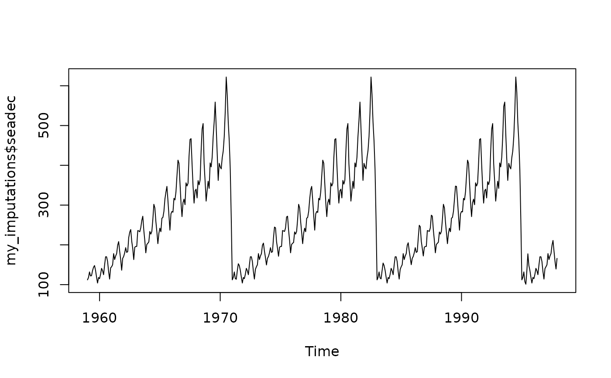

Function to get imputations from methods compared by kssa
get_imputations(x_ts, methods = "all", seed = 1234)A ts object with missing data to be imputed
A string or string vector indicating the method or methods
Numeric. Any number
A list of imputed time series with the selected methods
# Get imputed values for airgap_na_ts with the methods of
# Create 20% random missing data in tsAirgapComplete time series from imputeTS
set.seed(1234)
library("imputeTS")
library("kssa")
airgap_na <- missMethods::delete_MCAR(as.data.frame(tsAirgapComplete), 0.2)
# Convert co2_na to time series object
airgap_na_ts <- ts(airgap_na, start = c(1959, 1), end = c(1997, 12), frequency = 12)
my_imputations <- get_imputations(airgap_na_ts, methods = "all")
# my_imputations contains the imputed time series with all methods.
# Access it and choose the one from the best method for your purposes
my_imputations$seadec
#> Jan Feb Mar Apr May Jun Jul Aug
#> 1959 112.0000 118.0000 132.0000 125.4848 119.2121 135.0000 148.0000 148.0000
#> 1960 115.0000 121.2807 141.0000 135.0000 125.0000 149.0000 170.0000 170.0000
#> 1961 145.0000 150.0000 178.0000 174.5399 172.0000 178.0000 199.0000 199.0000
#> 1962 171.0000 180.0000 193.0000 188.8855 183.0000 218.0000 230.0000 242.0000
#> 1963 196.0000 196.0000 236.0000 235.0000 229.0000 243.0000 264.0000 262.3795
#> 1964 204.0000 205.1378 235.0000 227.0000 234.0000 266.5811 289.2784 293.0000
#> 1965 242.0000 233.0000 267.0000 269.0000 270.0000 315.0000 333.6149 333.3239
#> 1966 284.0000 277.0000 317.0000 313.0000 318.0000 374.9697 413.0000 405.0000
#> 1967 315.0000 317.9881 356.0000 362.0790 372.5951 422.0000 451.2115 467.0000
#> 1968 340.0000 318.0000 355.9344 348.0000 363.0000 435.0000 491.0000 451.8258
#> 1969 360.0000 342.0000 406.0000 396.0000 420.0000 481.3180 548.0000 507.5212
#> 1970 380.3753 391.0000 419.0000 461.0000 487.6239 535.0000 622.0000 606.0000
#> 1971 112.0000 118.0000 132.0000 126.5018 120.2499 135.0000 148.0000 148.0000
#> 1972 115.0000 118.8875 141.0000 135.0000 125.0000 149.0000 170.0000 170.0000
#> 1973 145.0000 150.0000 178.0000 177.1339 172.0000 178.0000 199.0000 199.0000
#> 1974 171.0000 180.0000 193.0000 191.2255 183.0000 218.0000 230.0000 242.0000
#> 1975 196.0000 196.0000 236.0000 235.0000 229.0000 243.0000 264.0000 265.2080
#> 1976 204.0000 201.2002 235.0000 227.0000 234.0000 265.7436 297.6359 293.0000
#> 1977 242.0000 233.0000 267.0000 269.0000 270.0000 315.0000 344.9438 339.3074
#> 1978 284.0000 277.0000 317.0000 313.0000 318.0000 370.3421 413.0000 405.0000
#> 1979 315.0000 314.9443 356.0000 363.3104 372.3793 422.0000 459.7190 467.0000
#> 1980 340.0000 318.0000 356.2564 348.0000 363.0000 435.0000 491.0000 450.5069
#> 1981 360.0000 342.0000 406.0000 396.0000 420.0000 476.1864 548.0000 505.3458
#> 1982 381.6532 391.0000 419.0000 461.0000 487.4797 535.0000 622.0000 606.0000
#> 1983 112.0000 118.0000 132.0000 128.0458 121.1260 135.0000 148.0000 148.0000
#> 1984 115.0000 116.8399 141.0000 135.0000 125.0000 149.0000 170.0000 170.0000
#> 1985 145.0000 150.0000 178.0000 178.1083 172.0000 178.0000 199.0000 199.0000
#> 1986 171.0000 180.0000 193.0000 192.0492 183.0000 218.0000 230.0000 242.0000
#> 1987 196.0000 196.0000 236.0000 235.0000 229.0000 243.0000 264.0000 259.4838
#> 1988 204.0000 200.1214 235.0000 227.0000 234.0000 262.4587 308.9839 293.0000
#> 1989 242.0000 233.0000 267.0000 269.0000 270.0000 315.0000 360.0867 346.0297
#> 1990 284.0000 277.0000 317.0000 313.0000 318.0000 363.8755 413.0000 405.0000
#> 1991 315.0000 315.9550 356.0000 360.9764 372.4961 422.0000 464.8652 467.0000
#> 1992 340.0000 318.0000 355.3815 348.0000 363.0000 435.0000 491.0000 471.1924
#> 1993 360.0000 342.0000 406.0000 396.0000 420.0000 495.8770 548.0000 534.5737
#> 1994 380.1774 391.0000 419.0000 461.0000 477.2368 535.0000 622.0000 606.0000
#> 1995 112.0000 118.0000 132.0000 114.7732 103.4838 135.0000 148.0000 148.0000
#> 1996 115.0000 117.2411 141.0000 135.0000 125.0000 149.0000 170.0000 170.0000
#> 1997 145.0000 150.0000 178.0000 170.5767 172.0000 178.0000 199.0000 199.0000
#> Sep Oct Nov Dec
#> 1959 136.0000 119.0000 104.0000 118.0000
#> 1960 153.3510 133.0000 114.0000 140.0000
#> 1961 184.0000 162.0000 146.0000 166.0000
#> 1962 209.0000 191.0000 168.5207 194.0000
#> 1963 237.0000 211.0000 180.0000 201.0000
#> 1964 259.0000 230.8933 203.0000 229.0000
#> 1965 312.0000 274.0000 237.0000 276.2004
#> 1966 361.6590 306.0000 275.9555 306.0000
#> 1967 404.0000 347.0000 305.0000 336.0000
#> 1968 404.0000 359.0000 310.0000 337.0000
#> 1969 463.0000 407.0000 362.0000 395.7967
#> 1970 508.0000 461.0000 390.0000 432.0000
#> 1971 136.0000 119.0000 104.0000 118.0000
#> 1972 142.1200 133.0000 114.0000 140.0000
#> 1973 184.0000 162.0000 146.0000 166.0000
#> 1974 209.0000 191.0000 165.5836 194.0000
#> 1975 237.0000 211.0000 180.0000 201.0000
#> 1976 259.0000 230.6920 203.0000 229.0000
#> 1977 312.0000 274.0000 237.0000 283.2031
#> 1978 357.3619 306.0000 274.3375 306.0000
#> 1979 404.0000 347.0000 305.0000 336.0000
#> 1980 404.0000 359.0000 310.0000 337.0000
#> 1981 463.0000 407.0000 362.0000 400.7411
#> 1982 508.0000 461.0000 390.0000 432.0000
#> 1983 136.0000 119.0000 104.0000 118.0000
#> 1984 140.4218 133.0000 114.0000 140.0000
#> 1985 184.0000 162.0000 146.0000 166.0000
#> 1986 209.0000 191.0000 165.0678 194.0000
#> 1987 237.0000 211.0000 180.0000 201.0000
#> 1988 259.0000 231.4751 203.0000 229.0000
#> 1989 312.0000 274.0000 237.0000 286.1333
#> 1990 350.6335 306.0000 272.8864 306.0000
#> 1991 404.0000 347.0000 305.0000 336.0000
#> 1992 404.0000 359.0000 310.0000 337.0000
#> 1993 463.0000 407.0000 362.0000 404.1984
#> 1994 508.0000 461.0000 390.0000 432.0000
#> 1995 136.0000 119.0000 104.0000 118.0000
#> 1996 150.6465 133.0000 114.0000 140.0000
#> 1997 184.0000 162.0000 146.0000 166.0000
plot.ts(my_imputations$seadec)
